アバターにカスタマイズオプションを追加する方法
提供されているAvatarFrogTestのアバターには、色やプロポーションなどのカスタマイズオプションという利点があります。以下ではその追加方法やデバッグ方法を学び、Animazeアプリでアバターの色やサイズをカスタマイズしたり、小道具を追加したりできるようになっていただきます。
このテーマの詳細については、Animazeエディターマニュアルの、「カスタマイズオプション」のセクションでご覧いただけます。
それでは、始めましょう。
エディターパネルでカスタマイズオプションをクリックしてタブを開き、「新しいカスタマイズオプションを追加」ボタンを押します
-
エディターパネルでカスタマイズオプションをクリックします。
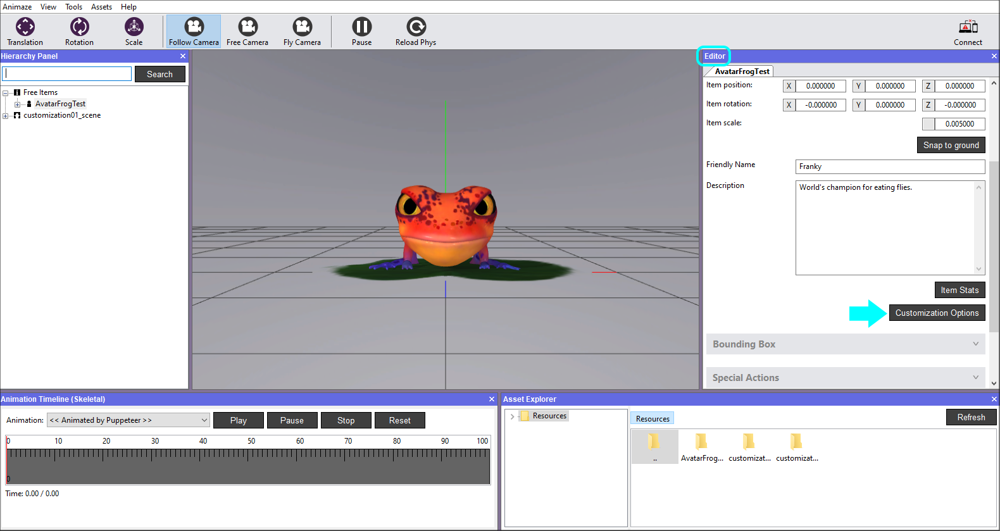
-
新たに開いたウィンドウで、色タブに行き、追加ボタンを押して開始します。
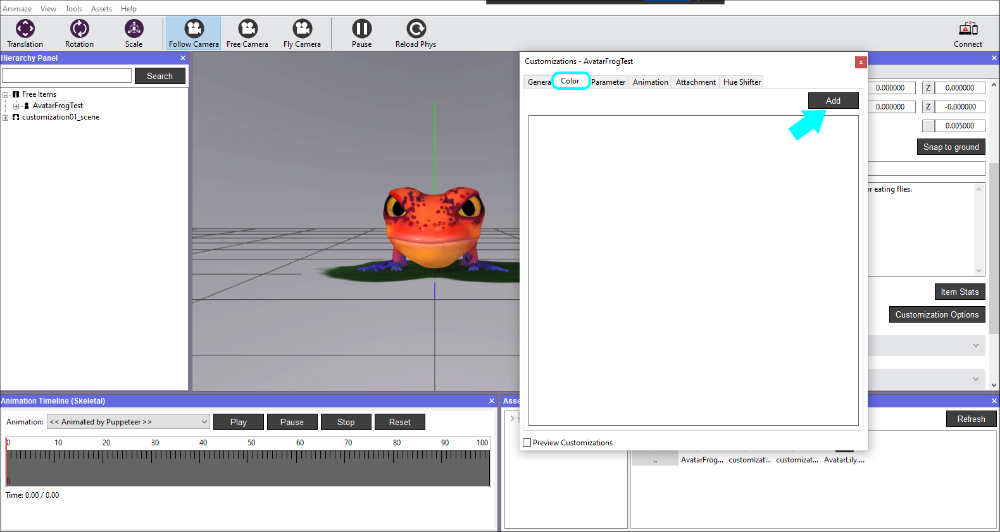
-
「色のカスタマイズ」タブをクリックして開き、「カラーマスク」ボックスをクリックし、アセットライブラリーからAvatarFrogTest_Body_CM2のテクスチャーを選択します
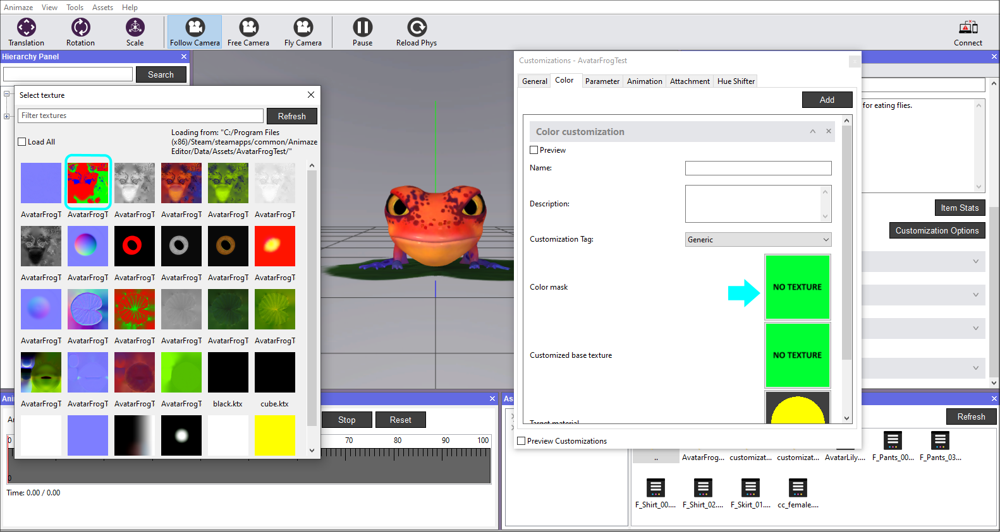
-
カスタマイズされたベーステクスチャーでも同じ操作を繰り返し、AvatarFrogTest_Body_CSTMのテクスチャーを選択します。
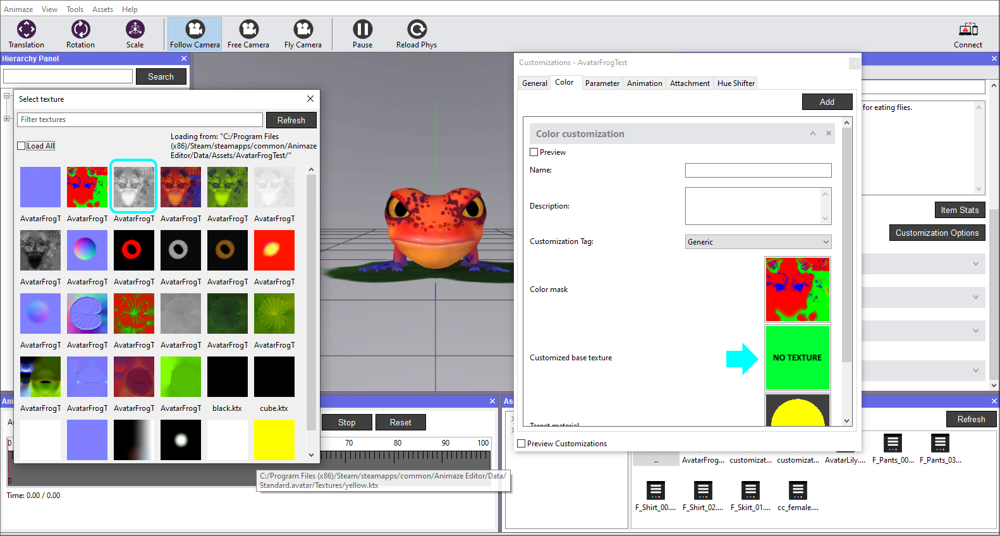
-
「マテリアルをターゲティング」を選択します。ここでは、「体」です。
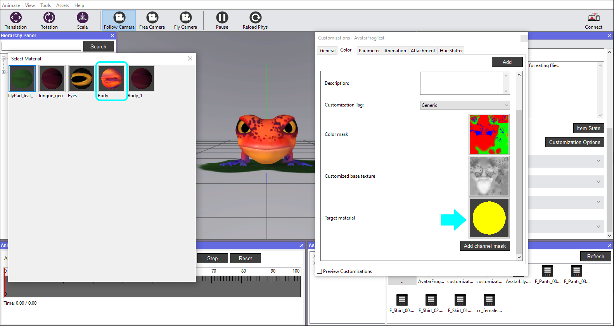
-
カスタマイズ・タグのドロップダウンリストでクリックして、「肌」のタグを設定します。このタグは、 Animazeアプリがカスタマイズオプションをグループ分けし、目、肌、髪などの分かりやすいカテゴリーに分類するのに役立ちます。
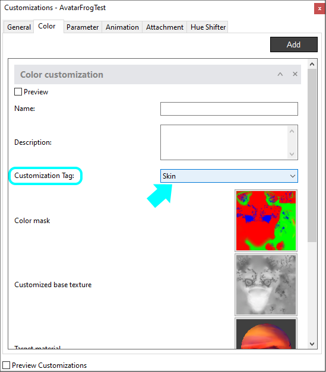
-
カラーマスクでは、アバターに1つ以上の色を追加することができます。3つのカラーチャンネルから成っており、機能させるにはそれらを追加する必要があります。「チャンネルマスクを追加」ボタンをクリックして、この手順を開始します。チャンネルターゲットのウィンドウが表示されますので、まず、赤チャンネルを選択します。
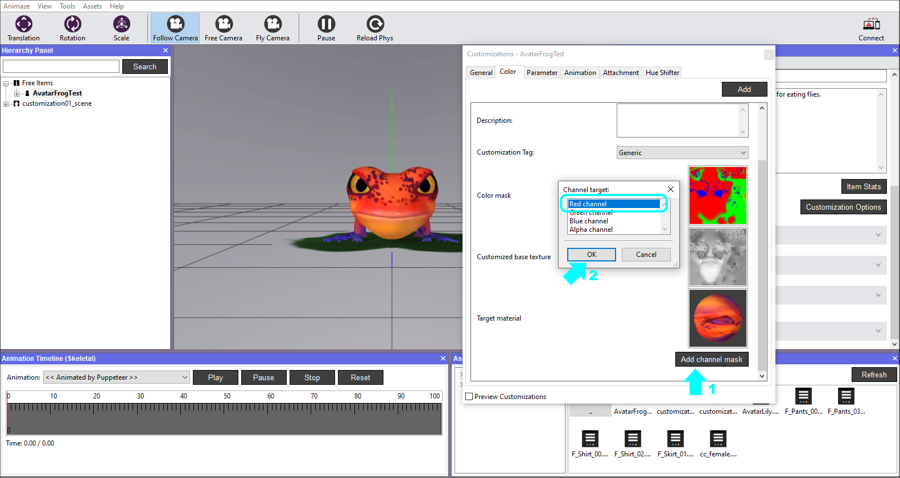
-
このチャンネルには色の割り当てが必要です。赤チャンネルのタブを開き、カラーボックスをクリックして、カラーピッカーのウィンドウから新しい色を選択します。選択したら、OKを押します。
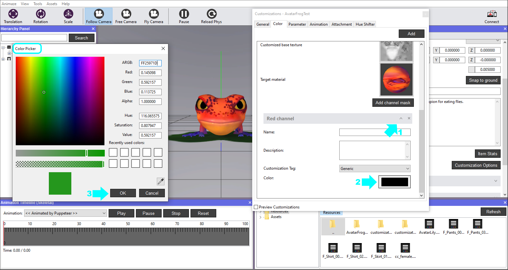
-
カスタマイズ・タグのドロップダウンリストでクリックして、「肌」のタグを設定します。
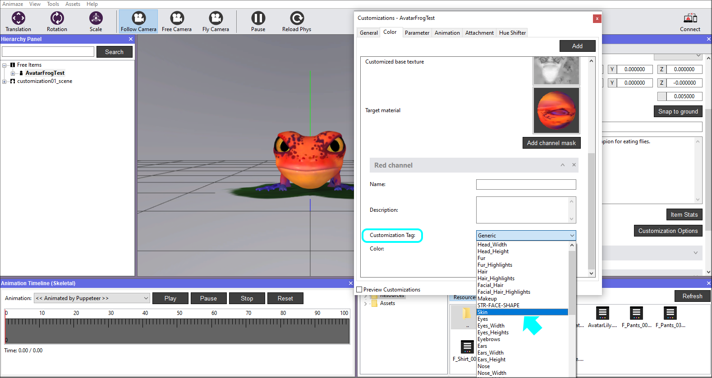
-
「チャンネルマスクを追加」ボタンを再びクリックして、緑チャンネルと青チャンネルを追加し、この作業をそれぞれ繰り返します。
-
それでは、アニメーションのカスタマイズを追加しましょう。エディターパネルからカスタマイズオプションを開き、アニメーションタブに行き、追加ボタンをクリックします。
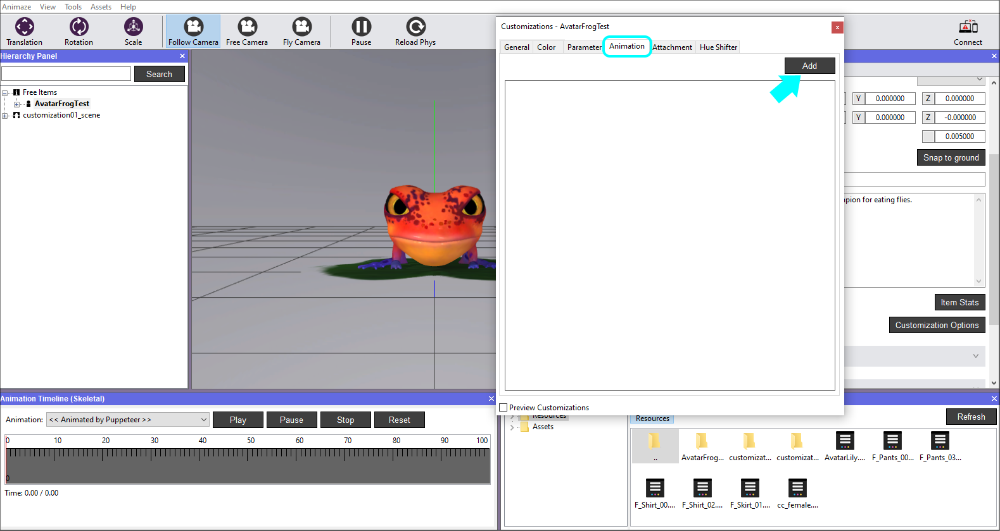
-
新たに追加されたカスタマイズを開いて「参照」ボタンをクリックし、.fbxファイルが入っているソースフォルダーを見つけ、アニメーションフォルダーを開き、ModifyProportions_Headのアニメーションを選択します。
ソースフォルダーの場所と名前は保存場所とフォルダーに付けた名前により異なりますので、ご注意ください。フォルダーのデフォルト名は「AvatarFrogTest」です。ソースフォルダーはアセットフォルダー（\Holotech\Animaze Editor\Data\Assets）に完全にコピーされるため、このフォルダーでソースを簡単に見つけられます。
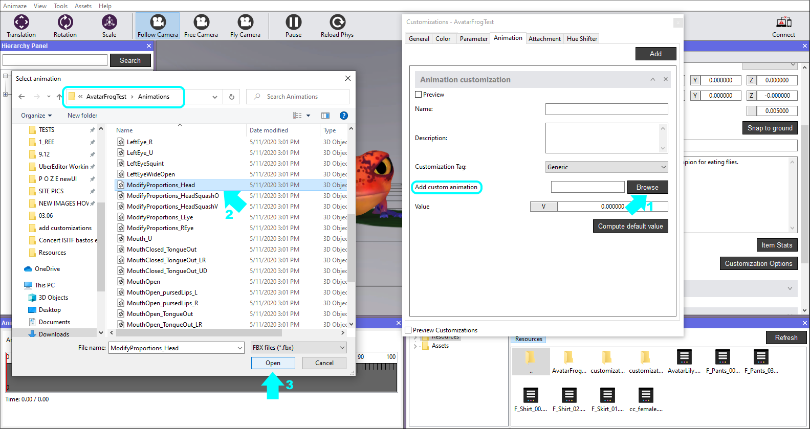
-
「デフォルト値を計算」ボタンをクリックして、スケーリングアニメーションの中央値を計算します。ここで使用するスケーリングアニメーションはアニメーションタイムラインの中央付近にデフォルトポーズが備わっていますが、厳密な値を得るために、「デフォルト値を計算」ボタンでアニメーションを1000個のサンプルで評価し、各サンプルポーズをデフォルトポーズとチェックすることで、正確に合わせることを試みています。デフォルトポーズと合うアニメーションのパーセンテージが見つかったら、値のテキストボックスに入力されます。
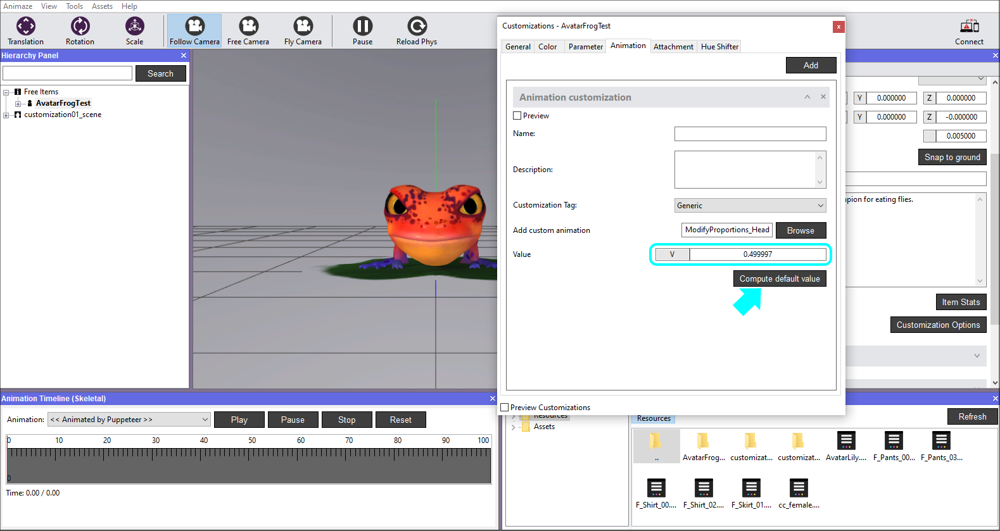
-
カスタマイズ・タグのドロップダウンリストでクリックして、「頭」のタグを設定します。このタグは、 Animazeアプリがカスタマイズオプションをグループ分けし、目、肌、髪などの分かりやすいカテゴリーに分類するのに役立ちます。
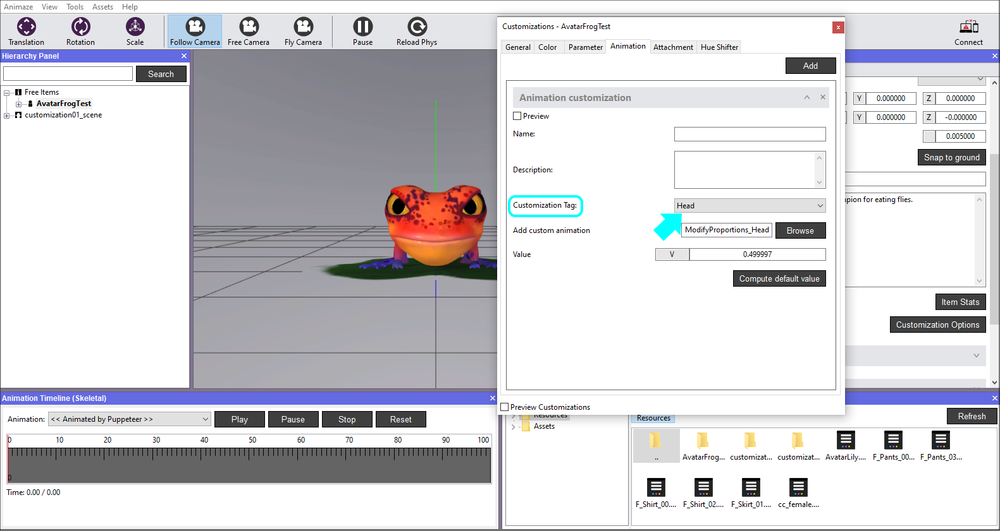
-
アバターには小道具のボーンも多少含まれており、帽子や眼鏡、ヒゲをそこに追加することができます。カスタマイズオプションウィンドウの全般タブで「利用可能な添付スロットを検出」ボタンをクリックします。こうすると、現在のウィンドウの添付タブに、小道具オプションが追加されます。
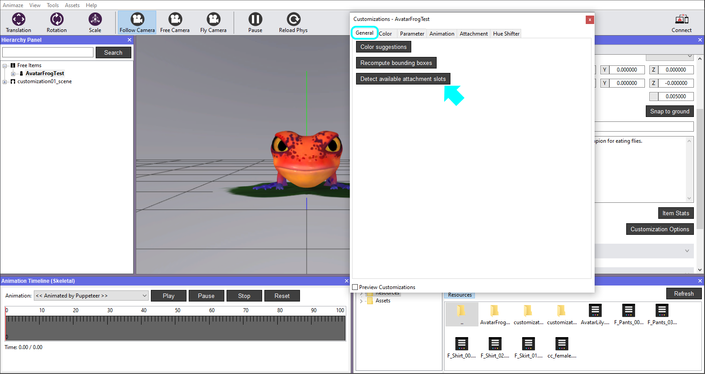
-
添付タブで各小道具のカスタマイズを開いてそれぞれ（帽子、ヒゲ、眼鏡）に対応するタグを設定し、システムがそれらを認識して使用時にタブに従って小道具を取り付けられるようにします。下記のように、各小道具オプションに対してそれぞれ行ってください。
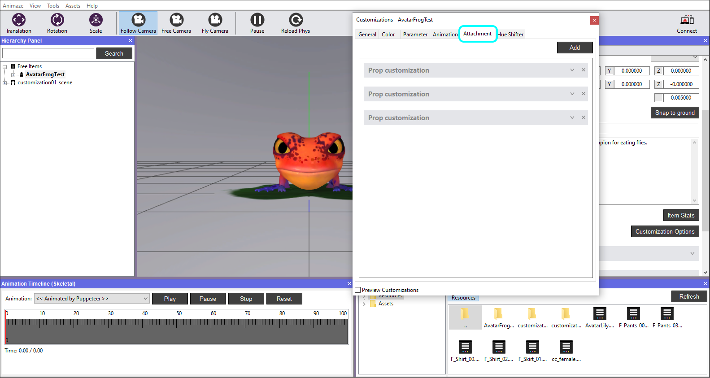
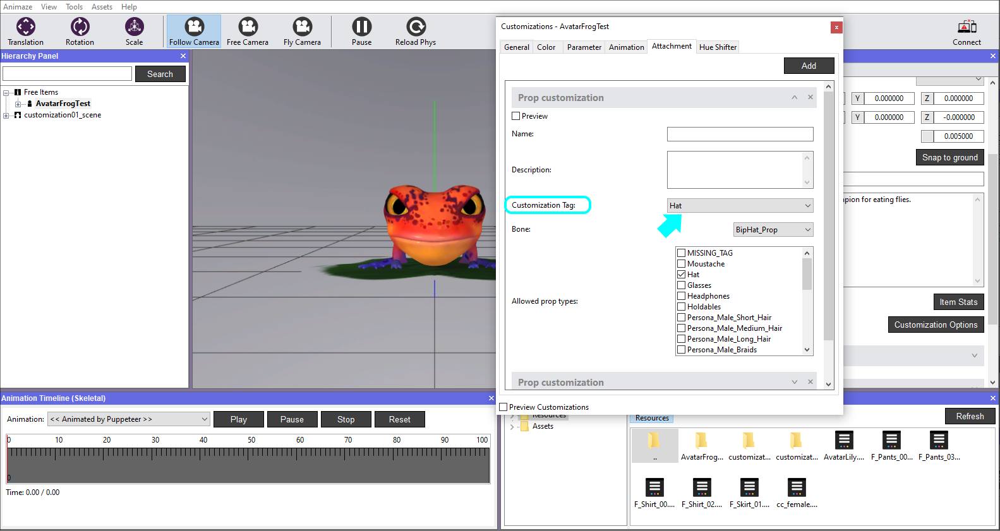
これで使用可能なカスタマイズをすべて追加し終えましたので、デバッガーを使って動作を確認しましょう。
-
「ツール」メニューに移動し、「カスタマイズ・デバッガー」を選択します。フローティング・ウィンドウが表示されます。
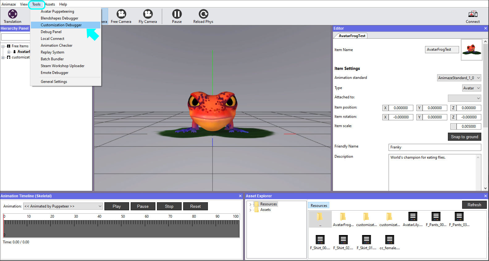
-
デバッガーの「色」のタブで置き換えたい肌の色を選択し、カラーピッカーで色を選択して、結果に問題がなければOKを押します。このデバッガーの「保存」と「元に戻す」ボタンで新しい色を保存することも、前の色に戻すこともできます。
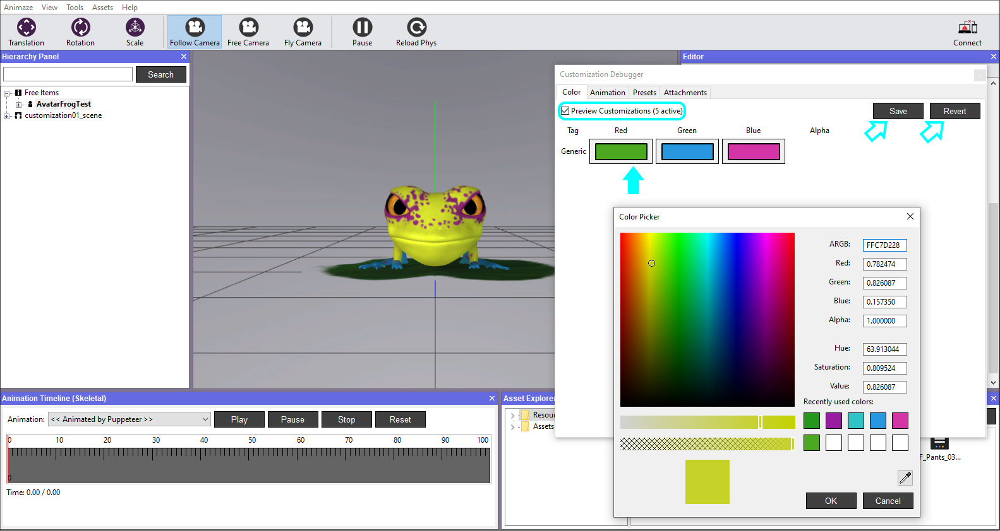
-
デバッガーの「アニメーション」タブをクリックしたままマウスを左右に動かすことで、アバターの頭のサイズを変更できます。このデバッガーの「保存」と「元に戻す」ボタンで新しいサイズを保存することも、前のサイズに戻すこともできます。
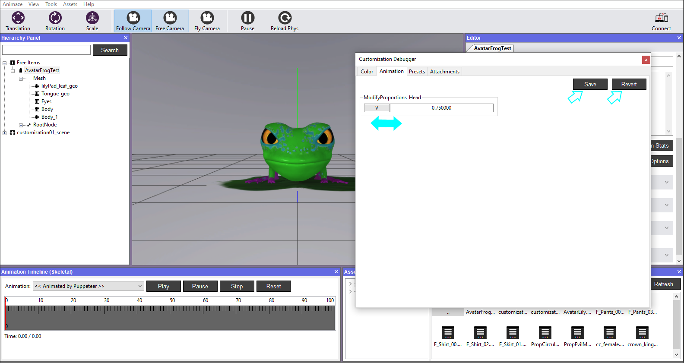
-
デバッガーの「添付」タブで試したい帽子の小道具をクリックして、ビューポートでアバターを見てみましょう。
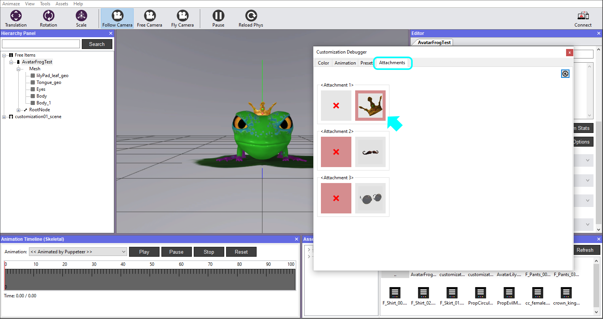
-
色タブへ行き、カスタマイズのプレビューのボックスからチェックをはずし、ウィンドウを閉じます。
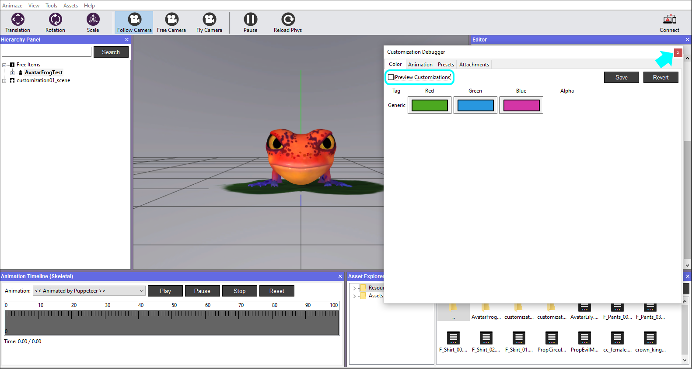
ご注意いただきたいのは、カスタマイズ・デバッガーを閉じると、保存していないすべてのデータが失われ、アバターの状態、色、サイズが、カスタマイズオプションでテクスチャーの追加を追えたときのものに戻ってしまうということです。
-
作業を追えたら、階層パネルにアイテムを保存します。保存せずにAnimazeエディターを終了すると、作業結果がすべて失われます。
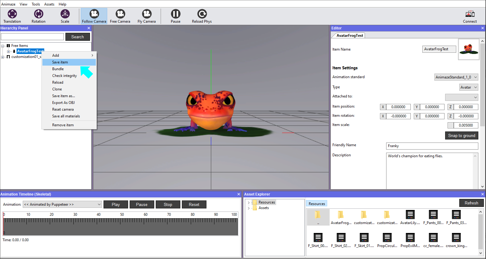
このテーマの詳細については、Animazeエディターマニュアルの、「カスタマイズオプション」のセクションでご覧いただけます。